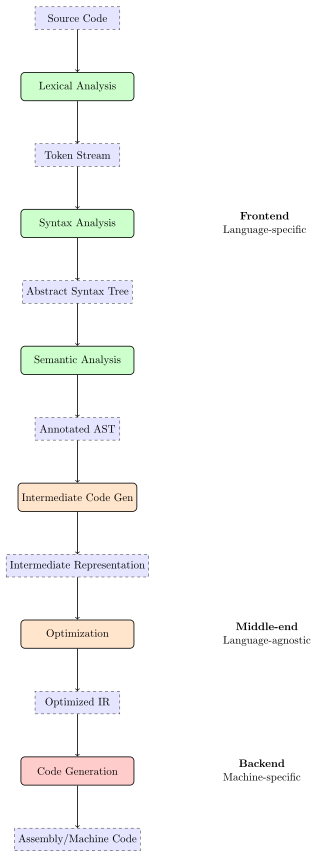
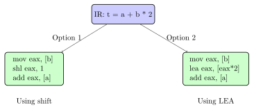

Chapter 3: Compilation: The Great Translation Process¶
Compilation is the bridge between human thought and machine execution. In this chapter, we dive deep into how compilers transform high-level code into machine instructions, exploring each phase of this remarkable translation process.
3.1 The Compilation Pipeline¶
A compiler is essentially a translator that converts source code written in a high-level language into target code that can be executed by a machine. This translation happens through multiple phases, each solving a specific problem.

3.2 Phase 1: Lexical Analysis (Tokenization)¶
The lexer reads the source code character by character and groups them into meaningful units called tokens.
3.2.1 What is a Token?¶
A token is the smallest meaningful unit in a programming language:
int result = a + b * 2;
This becomes the following token stream:
| Token Type | Value | Category |
|---|---|---|
| KEYWORD | int | Type specifier |
| IDENTIFIER | result | Variable name |
| OPERATOR | = | Assignment |
| IDENTIFIER | a | Variable name |
| OPERATOR | + | Addition |
| IDENTIFIER | b | Variable name |
| OPERATOR | * | Multiplication |
| NUMBER | 2 | Integer literal |
| SEMICOLON | ; | Statement terminator |
Practical Example
Implementing a Simple Lexer:
import re
class Token:
def __init__(self, type, value):
self.type = type
self.value = value
def __repr__(self):
return f'Token({self.type}, {self.value})'
class Lexer:
def __init__(self, text):
self.text = text
self.pos = 0
self.current_char = self.text[0] if text else None
def advance(self):
self.pos += 1
if self.pos >= len(self.text):
self.current_char = None
else:
self.current_char = self.text[self.pos]
def skip_whitespace(self):
while self.current_char and self.current_char.isspace():
self.advance()
def read_number(self):
num_str = ''
while self.current_char and self.current_char.isdigit():
num_str += self.current_char
self.advance()
return int(num_str)
def read_identifier(self):
id_str = ''
while self.current_char and (self.current_char.isalnum() or
self.current_char == '_'):
id_str += self.current_char
self.advance()
return id_str
def tokenize(self):
tokens = []
keywords = {'int', 'float', 'if', 'else', 'while', 'return'}
while self.current_char:
if self.current_char.isspace():
self.skip_whitespace()
elif self.current_char.isdigit():
tokens.append(Token('NUMBER', self.read_number()))
elif self.current_char.isalpha() or self.current_char == '_':
identifier = self.read_identifier()
if identifier in keywords:
tokens.append(Token('KEYWORD', identifier))
else:
tokens.append(Token('IDENTIFIER', identifier))
elif self.current_char in '+-*/':
tokens.append(Token('OPERATOR', self.current_char))
self.advance()
elif self.current_char == '=':
tokens.append(Token('ASSIGN', '='))
self.advance()
elif self.current_char == ';':
tokens.append(Token('SEMICOLON', ';'))
self.advance()
else:
raise ValueError(f'Unexpected character: {self.current_char}')
return tokens
# Example usage
lexer = Lexer("int result = a + b * 2;")
tokens = lexer.tokenize()
for token in tokens:
print(token)
3.3 Phase 2: Syntax Analysis (Parsing)¶
The parser takes the token stream and builds an Abstract Syntax Tree (AST) that represents the grammatical structure of the program.
3.3.1 Context-Free Grammars¶
Programming languages are defined by context-free grammars. Here’s a simple grammar for arithmetic expressions:
expression → term (('+' | '-') term)*
term → factor (('*' | '/') factor)*
factor → NUMBER | '(' expression ')'
3.3.2 Building the Abstract Syntax Tree¶
For our example result = a + b * 2, the AST would look like:
Solved Problem
Building a Recursive Descent Parser
Problem: Implement a parser for simple arithmetic expressions that respects operator precedence.
Solution:
class ASTNode:
pass
class BinaryOp(ASTNode):
def __init__(self, left, op, right):
self.left = left
self.op = op
self.right = right
def __repr__(self):
return f'({self.left} {self.op} {self.right})'
class Number(ASTNode):
def __init__(self, value):
self.value = value
def __repr__(self):
return str(self.value)
class Parser:
def __init__(self, tokens):
self.tokens = tokens
self.pos = 0
self.current_token = tokens[0] if tokens else None
def advance(self):
self.pos += 1
if self.pos < len(self.tokens):
self.current_token = self.tokens[self.pos]
else:
self.current_token = None
def parse_expression(self):
"""expression → term (('+' | '-') term)*"""
left = self.parse_term()
while (self.current_token and
self.current_token.type == 'OPERATOR' and
self.current_token.value in '+-'):
op = self.current_token.value
self.advance()
right = self.parse_term()
left = BinaryOp(left, op, right)
return left
def parse_term(self):
"""term → factor (('*' | '/') factor)*"""
left = self.parse_factor()
while (self.current_token and
self.current_token.type == 'OPERATOR' and
self.current_token.value in '*/'):
op = self.current_token.value
self.advance()
right = self.parse_factor()
left = BinaryOp(left, op, right)
return left
def parse_factor(self):
"""factor → NUMBER | '(' expression ')'"""
token = self.current_token
if token.type == 'NUMBER':
self.advance()
return Number(token.value)
elif token.value == '(':
self.advance()
expr = self.parse_expression()
if self.current_token.value != ')':
raise SyntaxError("Expected ')'")
self.advance()
return expr
else:
raise SyntaxError(f"Unexpected token: {token}")
# Example: Parse "2 + 3 * 4"
lexer = Lexer("2 + 3 * 4")
tokens = lexer.tokenize()
parser = Parser(tokens)
ast = parser.parse_expression()
print(f"AST: {ast}") # Output: (2 + (3 * 4))
3.4 Phase 3: Semantic Analysis¶
Semantic analysis ensures the program makes sense beyond just having correct syntax. It checks:
3.4.1 Type Checking¶
// Valid: compatible types
int a = 5;
int b = a + 10;
// Invalid: incompatible types
int x = "hello"; // Error: cannot assign string to int
// Invalid: undeclared variable
y = 20; // Error: 'y' not declared
3.4.2 Symbol Table Management¶
The compiler maintains a symbol table to track all identifiers:
| Name | Type | Scope | Memory Location | Attributes |
|---|---|---|---|---|
| a | int | global | 0x1000 | initialized |
| b | int | global | 0x1004 | initialized |
| result | int | global | 0x1008 | - |
| add_numbers | function | global | 0x2000 | returns int |
3.5 Phase 4: Intermediate Code Generation¶
The compiler generates an intermediate representation (IR) that’s independent of both the source language and target machine.
3.5.1 Three-Address Code¶
A common IR format where each instruction has at most three operands:
// Source: result = a + b * 2
t1 = b * 2
t2 = a + t1
result = t2
3.5.2 Static Single Assignment (SSA)¶
Modern compilers often use SSA form where each variable is assigned exactly once:
// Original code
x = 1
x = x + 1
y = x * 2
// SSA form
x1 = 1
x2 = x1 + 1
y1 = x2 * 2
3.6 Phase 5: Optimization¶
Optimization transforms the IR to improve performance without changing behavior.
3.6.1 Common Optimizations¶
Constant Folding¶
// Before optimization
int x = 2 + 3;
int y = x * 4;
// After optimization
int x = 5; // Computed at compile time
int y = 20; // Also computed at compile time
Dead Code Elimination¶
// Before optimization
int calculate(int a) {
int unused = a * 2; // Never used
if (false) {
return 0; // Unreachable
}
return a + 1;
}
// After optimization
int calculate(int a) {
return a + 1;
}
Loop Optimization¶
// Before optimization
for (int i = 0; i < n; i++) {
int x = a * b; // Doesn't depend on i
result[i] = x + i;
}
// After optimization
int x = a * b; // Moved outside loop
for (int i = 0; i < n; i++) {
result[i] = x + i;
}
Real-World Analogy
Think of compiler optimization like editing a draft essay:
-
Constant folding: Replace "2+2" with "4" throughout
-
Dead code elimination: Remove sentences that don’t contribute
-
Common subexpression: Don’t repeat the same explanation twice
-
Inlining: Replace "see appendix A" with the actual content
3.7 Phase 6: Code Generation¶
Finally, the compiler generates machine code for the target architecture.
3.7.1 Register Allocation¶
The compiler must map variables to the limited number of CPU registers:
// IR Code
t1 = a + b
t2 = c * d
t3 = t1 + t2
// x86 Assembly (after register allocation)
mov eax, [a] ; Load a into register eax
add eax, [b] ; Add b to eax (t1 = a + b)
mov ebx, [c] ; Load c into register ebx
imul ebx, [d] ; Multiply ebx by d (t2 = c * d)
add eax, ebx ; Add ebx to eax (t3 = t1 + t2)
mov [result], eax; Store result
3.7.2 Instruction Selection¶
Choosing the best machine instructions for each IR operation:

3.8 Real Compiler Example: GCC¶
Let’s trace our addition through GCC’s compilation:
# 1. Preprocessing
gcc -E program.c -o program.i
# 2. Compilation to assembly
gcc -S program.i -o program.s
# 3. Assembly to object code
gcc -c program.s -o program.o
# 4. Linking
gcc program.o -o program
# View intermediate representations
gcc -fdump-tree-all program.c # Dump all IR stages
Practical Example
Examining GCC Output:
// test.c
int main() {
int a = 15;
int b = 25;
int result = a + b;
return result;
}
.text
.globl main
main:
pushq
movq
movl $15, -4(
movl $25, -8(
movl -4(
addl -8(
movl
movl -12(
popq
ret
With optimization (-O2), GCC produces:
main:
movl $40,
ret
3.9 Exercises¶
Exercise for You
Exercise 3.1: Lexical Analysis
Write a lexer that can tokenize the following C-like code:
if (x > 10) {
y = x * 2;
} else {
y = x + 5;
}
Your lexer should identify keywords, operators, identifiers, numbers, and delimiters.
Exercise for You
Exercise 3.2: Parser Construction
Extend the recursive descent parser to handle: 1. Parentheses for grouping 2. Unary minus operator 3. Variable assignments
Test with: x = -(a + b) * 2
Exercise for You
Exercise 3.3: Optimization Analysis
For each code snippet, identify which optimizations could be applied:
// Snippet A
for (int i = 0; i < 100; i++) {
array[i] = i * 2 * 3;
}
// Snippet B
int compute(int x) {
int a = x * 2;
int b = x * 2;
return a + b;
}
// Snippet C
if (DEBUG) {
printf("Debug mode\n");
}
3.10 Chapter Summary¶
Compilation is a sophisticated translation process that bridges human intent and machine execution. Through six major phases:
1. Lexical Analysis: Text → Tokens 2. Syntax Analysis: Tokens → AST 3. Semantic Analysis: AST → Validated AST 4. IR Generation: AST → Intermediate Code 5. Optimization: IR → Optimized IR 6. Code Generation: IR → Machine Code
Our simple addition (result = a + b) undergoes extensive analysis and transformation, potentially being optimized to a single constant if the values are known at compile time.
Key Takeaway
Key Insight: The compiler is your first and most powerful optimization tool. Understanding how it works helps you write better code and debug mysterious behaviors.
Next: Chapter 4 - Object Files: The Incomplete Puzzle Pieces